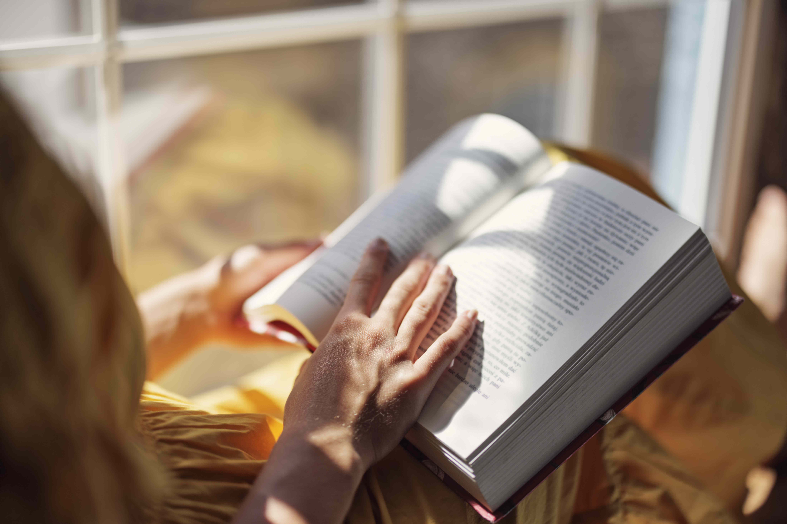

Reading is one of the most useful habits we can develop in our daily lives. It helps us knowledge, learn new things, and understand the world around us . We can read different types of materials such as books, newspapers, magazines, stories, and online articles. Reading regularly can also improve our vocabulary, grammar, writing, and communication skills. When we read, we learn new words and different ways to express our ideas. Reading is also a good way to relax and spend our free time. For example, reading an interesting novel or story can help us forget our stress for a while and enjoy another world through our imagination. It can also improve our concentration, creativity, and thinking skills. Even reading for twenty or thirty minutes every day can make a positive difference over time. Therefore, reading is not only important for education but also helpful for personal development and enjoyment.
Gardening is a relaxing and enjoyable activity that many people can do in their free time. It involves growing flowers, vegetables, fruits, and other plants. Gardening helps us spend more time outdoors and enjoy nature. It can also reduce stress and make us feel calm and happy. Growing vegetables and fruits at home can provide fresh and healthy food for the family. Gardening also teaches us patience and responsibility because plants need regular water, sunlight, and care. It is also a good form of physical activity. Overall, gardening is a healthy and useful hobby for people of all ages.
Cooking is an important and enjoyable activity that we do in our daily lives. It is the process of preparing food using different ingredients and methods. Cooking at home allows us to prepare fresh and healthy meals for ourselves and our families. It can also help us save money and choose better ingredients. Many people enjoy cooking because they can try new recipes and create different dishes. Cooking also improves useful skills such as planning, creativity, patience, and time management. Preparing food together with family or friends can be fun too. Overall, cooking is a valuable skill for everyone to learn.
Playing the piano is a fun and enjoyable hobby for people of all ages. It allows us to create beautiful music and express our feelings through different songs. Learning to play the piano takes time, patience, and regular practice. It can improve concentration, memory, and coordination because we need to use both hands while reading music. Playing the piano can also help us relax after a busy or stressful day. Some people enjoy playing alone, while others like performing for family and friends. Learning new songs gives a feeling of achievement. Overall, playing the piano is a creative and rewarding hobby.
READ MORE ABOUT READING